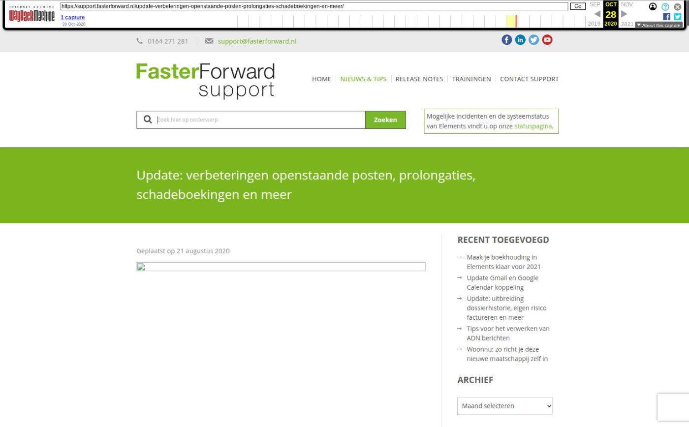

Update: verbeteringen openstaande posten, prolongaties, schadeboekingen en meer

Tekstinhoud
Geplaatst op 21 augustus 2020
Op dinsdag 25 Augustus 2020 wordt Elements wederom geüpdatet. Hierin weer vele mooie aanvullingen op de bestaande modules: verwerken van openstaande posten, verwerken van de prolongatie voor zowel de TP incasso als maatschappij incasso.
Duurzaamheidsprofiel
Eenmalige boeking in Rekening Courant regeling
Pop up ‘openstaande posten’ verbeterd
Batch zonder gekoppelde organisatie
Zoeken op dossier en relatienummer bij invoeren boeking
Iconen blijven zichtbaar in verwerkte ADN batch
Verrekenen schade uitbetalingen
Schadeboekingen opgenomen in RC maatschappijen
Extra controle bij het afronden van een ADN batch
Extra controle bij vergoedingen wegboeken/tp incasso boekingen omzetten naar factuur
Extra filter op verwerkt
Dekkingen op TP incasso factuur
Batches niet meer te verwijderen
Filter op afwijking
Schadeboeking aanmaken vanuit schademelding
Intern schadenummer gebruiken in boekhouding
Filteren op extern schadenummer
Pakket/polisnummer wordt in RC regeling getoond
Omschrijving boekstukregel verduidelijkt
Optimalisaties afboeken
Negatieve schadeboeking/ schadeboeking terugbetalen
Verwerkingsknoppen batch hernoemd
Aanpassing ‘betalingen onderweg’ en ‘incasso’s onderweg’
API uitbreiding
Andere verbeteringen of uitbreidingen
Fouten opgelost
Toevoeging duurzaamheidsprofiel
Het is nu mogelijk om vanuit Elements naar het duurzaamheidsprofiel van een woning te gaan. Deze vind je in het klantdossier onder het tabblad ‘Berekeningen’.
Eenmalige boeking in Rekening Courant regeling
Voorheen was het alleen mogelijk om de TP incasso boekingen die vanuit ADN gemaakt werden op te nemen in een RC regeling. Vanaf deze release is het mogelijk om ook handmatig aangemaakte boekingen op te nemen in een Rekening Courant regeling. Voorwaarde is dat de factuur gekoppeld is aan een product met een lopende rekening courant regeling.
Deze TP incasso boeking maak je aan vanuit het dossier, tabblad ‘TP incasso boekingen’. Kies hier voor ‘Eenmalig boeking toevoegen’. Er is een vaste betaalwijze bijgekomen, zichtbaar indien het product een RC regeling heeft, met de naam: “RC regeling’.
Lees hier meer informatie over het aanmaken van een Rekening Courant regeling.
Wanneer een factuur onder een Rekening Courant regeling valt, herken je deze in het facturenoverzicht.
Let op: Het rode driehoekje met uitroepteken geeft aan dat een factuur niet weggeboekt kan worden.
Pop up ‘openstaande posten’ verbeterd
De volgende aanpassingen zijn gerealiseerd in de pop up voor openstaande posten:
Kolom ‘openstaand’ kan nu gesorteerd worden.
Titel van de pop up is aangepast naar ‘openstaande posten’.
Er is een filter toegevoegd om op openstaande bedrag te kunnen filteren, van € X,XX tot € X,XX. Deze filter geldt op het originele openstaande bedrag.
Er kan nu gefilterd worden op relatie.
Het veld van “Boekdatum tot” is vanaf nu standaard leeg.
Batch zonder gekoppelde organisatie
Wanneer een batch in Elements binnenkomt wordt deze op basis van de POR code gematcht aan de betreffende maatschappij. Wanneer de POR code niet aan een maatschappij gekoppeld kan worden, zie je in de batch een geel uitroepteken en een foutmelding. Deze melding hebben we verduidelijkt én toegevoegd bij het vergrootglas icoon van de batch. Je ziet de foutmelding wanneer je met je muis op het uitroepteken of de foutmelding gaat staan.
Zoeken op dossier en relatienummer bij invoeren boeking
Bij het aanmaken van een boeking via “Invoeren boekingen” kan er nu bij relatie ook gezocht worden op dossiernummer. Voorheen zag je hier alleen het debiteuren/crediteurennummer, de naam van de klant en de woonplaats.
Het debiteuren/crediteurennummer is nu vervangen door het dossiernummer. Hierdoor kan je nu bij relatie ook zoeken op dossiernummer bij het aanmaken van een boeking.
Iconen blijven zichtbaar in verwerkte ADN batch
Voorheen werden de stekker icoontjes niet meer weergegeven in een ADN batch wanneer deze afgerond/geboekt was. Deze blijven nu altijd zichtbaar, zodat je altijd achteraf kunt zien of er een post was die niet gematcht was.
Let op! deze posten zijn nog steeds niet meer bewerkbaar ná het boeken.
Voorheen was de kolom OM (offerte match) dus leeg na afronden/wegboeken:
Verrekenen schade uitbetalingen
De module om schades uit te betalen is verbeterd. Deze is te vinden onder “Betalingen selecteren -> Schades”. Hierbij is het nu mogelijk om de uit te betalen schades te verrekenen met openstaande facturen. Dit is handig wanneer de partij waar de schade naar uitgekeerd wordt ook een klant van je is en deze een betalingsachterstand heeft.
Schadeboekingen opgenomen in RC maatschappijen
Schadeboekingen worden nu ook opgenomen in het rekening-courant maatschappijen overzicht. Hierdoor is het overzicht in dit scherm nu volledig. Voorheen waren schadeboekingen namelijk alleen in de grootboek rekening-courant maatschappijen terug te zien.
Extra controle bij het afronden van een ADN batch
Wanneer een batch afgerond wordt, krijg je nu een melding indien er posten binnen de batch aanwezig zijn die niet gematcht zijn. Wanneer een post niet gematcht wordt en de batch wel weggeboekt wordt, worden deze posten op ‘Onbekende ontvangsten’ geboekt.
Let op: hierdoor is het niet meer mogelijk om meerdere batches tegelijk weg te boeken.
Extra controle bij vergoedingen wegboeken/tp incasso boekingen omzetten naar factuur
Indien er geen boeking/vergoeding aangemaakt is voor alle goedgekeurde posten in de batch, krijg je nu ook een melding zodra je op de knop “Vergoedingen boeken / TP incasso boekingen omzetten naar factuur” klikt.
Extra filter op verwerkt
Het is nu ook mogelijk om te achterhalen voor welke post(en) er geen vergoeding/TP incasso boeking is aangemaakt. Hiervoor is het veld ‘verwerkt’ toegevoegd in de filter van de batch.
Indien je geen gebruik maakt van de TP incasso module ziet dit er als volgt uit:
Indien je wél gebruik maakt van de TP incasso module ziet dit er als volgt uit. Je hebt dan twee opties om uit te kiezen naast “Verwerkt”.
Dekkingen op TP incasso factuur
Er is een nieuwe instelling waardoor je nu zelf bepaalt of dekkingen getoond worden op een TP incasso factuur. Deze instelling staat standaard op ‘wel tonen’ en kun je aanpassen via ‘Onderhoud administraties’ -> ‘TP incasso instellingen’ -> ‘Factuur.’
Let op: deze instelling kan je aan- of uitzetten.
Batches niet meer te verwijderen
Indien je gebruik maakt van de TP incasso module, is het nu niet meer mogelijk om een batch te verwijderen. Dit voorkomt dat het RC maatschappijen overzicht niet meer klopt. De TP-boekingen moeten namelijk terug geredeneerd kunnen worden naar de RC periode. Wanneer je een batch zou verwijderen, worden dus de verwerkte gegevens die gekoppeld zijn aan de RC maatschappijen ook verwijderd.
Indien je toch probeert de batch te verwijderen, krijg je een melding te zien die uitlegt waarom je de batch niet kunt verwijderen.
Filter op afwijking
Het is nu makkelijker om de betreffende afwijkingen in een ADN batch te achterhalen. Hiervoor is een filter “Afwijking” toegevoegd in de batch.
Schadeboeking aanmaken
Wanneer een schademelding aan een TP incasso product is gekoppeld, is het nu mogelijk om vanuit de schademelding een schadeboeking aan te maken. Hiervoor vind je een knop ‘Schadeboeking toevoegen’ in het blok ‘schadebedrag’.
Intern schadenummer gebruiken in boekhouding
Voorheen werd het externe schadenummer van de maatschappij gebruikt in het SEPA-bestand (uitbetaling van schades) en in de boekstukregels. Dit is aangepast naar het interne schadenummer van het kantoor.
Filteren op extern schadenummer
In het schademeldingen overzicht kun je nu filteren op extern schadenummer van de maatschappij.
Pakket/polisnummer wordt in RC regeling getoond
Het pakket/polisnummer wordt nu in de rekening-courant regeling getoond.
Omschrijving boekstukregel verduidelijkt
De omschrijving van het boekstukregel in de RC debiteuren is verduidelijkt. Voorheen was de omschrijving nietszeggend. Nu wordt het volgende getoond: “Soort boeking” “RC periode” – “Pakketnummer” – “Klantnaam”
Optimalisaties afboeken
Het selecteren van afboekingen is verbeterd. Dit is handig wanneer je via het bankboek een betalings- of incassobatch wil afboeken. In de pop-up “Openstaande posten” (via F6) wordt de betreffende batch geselecteerd en worden de resultaten linksonder getoond.
Met de knop “Alles selecteren” werden alleen de posten op de eerste pagina geselecteerd en naar rechts gezet. Deze knop is hernoemd naar “Gehele batch selecteren” en hierbij worden nu alle posten geselecteerd.
Negatieve schadeboeking/ schadeboeking terugbetalen
Indien de klant het gehele schadebedrag of een deel hiervan terugbetaalt, kun je dit nu in Elements verwerken. Hiervoor is de knop “Terugbetaling verwerken” toegevoegd in de regel van een schadeboeking. De knop wordt zichtbaar zodra de schade is uitbetaald.
Wanneer er op de knop geklikt wordt, kom je in het scherm “Terugbetaling verwerken”.
Na het invoeren van alle velden wordt er een TP incassoboeking aangemaakt met een negatief bedrag. Een factuur wordt alleen aangemaakt indien er bij het invoeren aangegeven is dat er een factuur gewenst is.
Verwerkingsknoppen batch hernoemd
De verwerkingsknoppen in een prolongatie/mutatie batch zijn hernoemd. Hierdoor zijn de functies van de knoppen duidelijker.
Voor:
Na:
Aanpassing ‘betalingen onderweg’ en ‘incasso’s onderweg’
Er is nu een overkoepelende instelling voor de subadministraties ‘betalingen onderweg’ en ‘incasso’s onderweg’. Hiermee worden de basisinstellingen voor beide onder de (kantoor)administratie ingesteld.
Dit kun je instellen onder “Onderhoud administraties -> Facturatie”.
Deze instellingen worden niet overgenomen bij het aanmaken van een nieuwe debiteur of crediteur.
Controleer daarom altijd of de instellingen onder een crediteur of debiteur ingevuld zijn. Ga hiervoor in het dossier naar het tabblad ‘financieel’ -> ‘relatie’-> ‘financieel’.
Indien je vergeet de instellingen te vullen onder een debiteur of crediteur dan valt de boekhouding terug op hetgeen wat onder de administratie is ingesteld.
API uitbreiding – Soort document en protocol’
Onze API is uitgebreid met het soort document en protocol. Door deze toevoeging is het nu mogelijk voor een website-ontwikkelaar om de stukkenlijst, van bijvoorbeeld een klantportaal, aan te vullen.
Wanneer een verbinding met dit API-endpoint is ontwikkeld, kun je nu zien voor welke persoon de stukken zijn. Daarnaast zie je het ‘ID-nummer’ van het bestand dat er bij hoort, bijv. het identiteitsbewijs.
Bekijk hier onze API website voor meer informatie.
Andere verbeteringen en uitbreidingen
Wanneer je een batch gaat verwerken zie je nu duidelijker welke posten een 0 euro post betreffen. Hiervoor wordt geen boeking aangemaakt en dus ook geen factuur van verstuurd.
In de onderstaande afbeelding zie je bovenaan de filter voor 0 euro posten. Daarnaast zie je dat de onderste regel lichter grijs is dan de andere regels. Dit komt omdat het een 0 euro post betreft.
Fouten opgelost
Schademelding onthouden in schadeboeking. Ongeacht welke status de schademelding heeft blijft deze nu gekoppeld aan de gemaakte schadeboeking.
Naamgeving prolongatiedatum in de productkaart is hernoemd naar ‘laatste prolongatie’
Bij het wegboeken van een prolongatie batch werd soms teruggevallen op een verkeerd BTW code, dit is nu aangepast
Tags omtrent de rekening courant factuur zijn uitgebreid t.b.v. de workflow.
Categorie: Algemeen